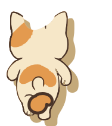
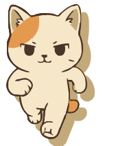
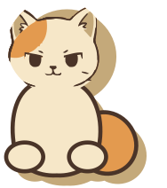

Rear gameplay

Split from assets/characters/vectorized-cat.svg, recolored to CatCream / CatGinger / InkBrown / ShadowDust. Rear gameplay has a smooth back, a ginger saddle, and one fluffy tail from the rump. The question-mark hook over the spine is gone. Front is for UI. Sit is for Game Over.
Judge the rear first. There must be only one tail, attached low. Then check 40 px and 48 px on sand.



Rear must read as a smooth cream back, a ginger saddle, and one low fluffy tail. No hook on the spine.